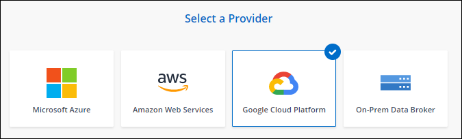
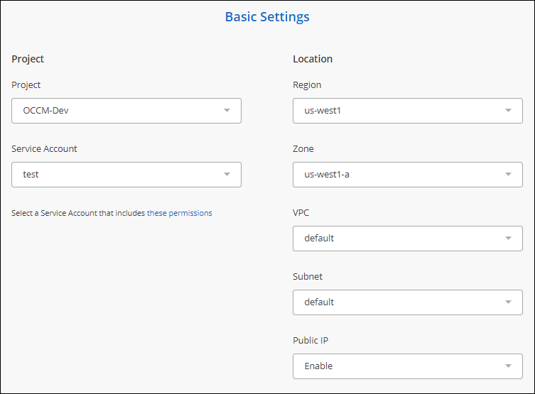

ドキュメントの変更をリクエスト
ドキュメントの変更をリクエスト GitHub で編集
GitHub で編集 寄稿者向けガイド
寄稿者向けガイドGoogle Cloud で新しいデータブローカーを作成
新しいデータブローカーグループを作成するときは、 Google Cloud Platform を選択して、 Google Cloud VPC 内の新しい仮想マシンインスタンスにデータブローカーソフトウェアを導入します。Cloud Sync ではインストールプロセスがガイドされますが、インストールの準備に役立つように、このページの要件と手順が繰り返されています。
また、クラウド内または社内の既存の Linux ホストにデータブローカーをインストールすることもできます。 "詳細はこちら。"。
サポートされている Google Cloud リージョン
すべてのリージョンがサポートされています。
ネットワーク要件
-
データブローカーは、アウトバウンドインターネット接続を必要としているため、クラウド同期サービスにポート 443 経由のタスクをポーリングできます。
Cloud Sync が Google Cloud にデータブローカーを導入すると、必要なアウトバウンド通信を可能にするセキュリティグループが作成されます。
アウトバウンド接続を制限する必要がある場合は、を参照してください "データブローカーが連絡するエンドポイントのリスト"。
-
ネットワークタイムプロトコル（ NTP ）サービスを使用するように、ソース、ターゲット、およびデータブローカーを設定することを推奨します。3 つのコンポーネント間の時間差は 5 分を超えないようにしてください。
Google Cloud にデータブローカーを導入するための権限が必要です
データブローカーを導入する Google Cloud ユーザに、次の権限があることを確認します。
- compute.networks.list
- compute.regions.list
- deploymentmanager.deployments.create
- deploymentmanager.deployments.delete
- deploymentmanager.operations.get
- iam.serviceAccounts.listサービスアカウントに必要な権限
データブローカーを導入する場合、次の権限を持つサービスアカウントを選択する必要があります。
- logging.logEntries.create
- resourcemanager.projects.get
- storage.buckets.get
- storage.buckets.list
- storage.objects.*
- iam.serviceAccounts.signJwt

|
「 iam.serviceAccounts.signJwt" 」権限が必要なのは、外部の橋本ボルトを使用するようにデータブローカーを設定する予定の場合のみです。 |
データブローカーの作成
新しいデータブローカーを作成する方法はいくつかあります。以下の手順では、同期関係を作成するときにデータブローカーを Google Cloud にインストールする方法について説明します。
-
[ 新しい同期の作成 *] をクリックします。
-
[ 同期関係の定義 *] ページで、ソースとターゲットを選択し、 [ 続行 *] をクリックします。
「 * データブローカーグループ * 」ページが表示されるまで、手順を完了します。
-
[ * データブローカーグループ * ] ページで、 [ * データブローカーの作成 * ] をクリックし、 [Microsoft Azure* ] を選択します。

-
データブローカーの名前を入力し、 [* 続行 ] をクリックします。
-
メッセージが表示されたら、 Google アカウントでログインします。
このフォームは Google が所有およびホストしています。クレデンシャルがネットアップに提供されていません。
-
プロジェクトとサービスアカウントを選択し、パブリック IP アドレスを有効にするか無効にするかなど、データブローカーの場所を選択します。
パブリック IP アドレスを有効にしない場合は、次の手順でプロキシサーバーを定義する必要があります。

-
VPC でのインターネットアクセスにプロキシが必要な場合は、プロキシの設定を指定します。
インターネットアクセスにプロキシが必要な場合は、データブローカーと同じサービスアカウントを Google Cloud で使用してプロキシを設定する必要があります。
-
データブローカーが利用可能になったら、 Cloud Sync で [* 続行 ] をクリックします。
このインスタンスの導入には、約 5 ～ 10 分かかります。Cloud Sync サービスから進捗状況を監視できます。このサービスは、インスタンスが使用可能になると自動的に更新されます。
-
ウィザードのページに入力して、新しい同期関係を作成します。
Google Cloud にデータブローカーを導入し、新しい同期関係を作成しました。このデータブローカーは、追加の同期関係とともに使用できます。
他の Google Cloud プロジェクトでバケットを使用する権限を付与する
同期関係 Cloud Sync を作成し、ソースまたはターゲットとして Google Cloud Storage を選択すると、データブローカーのサービスアカウントに使用する権限があるバケットから選択できるようになります。デフォルトでは、これにはデータブローカーサービスアカウントと同じ _PROJECT に含まれるバケットが含まれます。ただし、必要な権限を指定した場合は、 _other_projects からバケットを選択できます。
-
Google Cloud Platform コンソールを開き、 Cloud Storage サービスをロードします。
-
同期関係のソースまたはターゲットとして使用するバケットの名前をクリックします。
-
[Permissions] をクリックします
-
[ 追加（ Add ） ] をクリックします。
-
データブローカーのサービスアカウントの名前を入力します。
-
提供するロールを選択します 上記と同じ権限。
-
[ 保存（ Save ） ] をクリックします。
同期関係を設定するときに、そのバケットを同期関係のソースまたはターゲットとして選択できるようになりました。
データブローカー VM インスタンスの詳細
Cloud Sync は、 Google Cloud に次の構成でデータブローカーを作成します。
- マシンのタイプ
-
N1-standard-4
- vCPU
-
4.
- RAM
-
15 GB
- オペレーティングシステム
-
Red Hat Enterprise Linux 7.7
- ディスクのサイズとタイプ
-
20 GB HDD pd-standard